בהמשך לפוסט: קופסאות צל, אני רוצה להוסיף חיות לקופסאות - אעשה בתור התחלה דברים פשוטים.
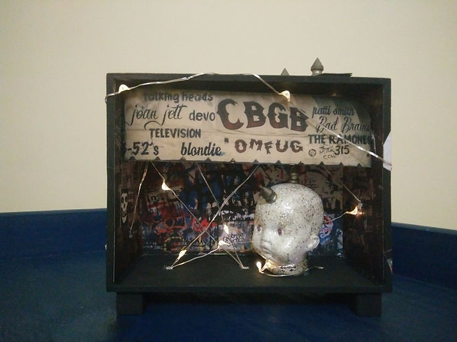
הראש של התינוק פאנק יסתובב לצדדים. לא בצורה מונוטונית אלא רנדומלית. פעם בחצי דקה, לצורך העניין. אולי בהמשך יגיב לסביבה באמצעות חיישן.
מתוך רמקול קטן יושמעו שירי פאנק מהתקופה.
התאורה תעומעם רנדומלית/חיישנית.
להכל אוסיף, כמובן, שליטה של ה-MindWave.
עדכון: 27/7/19
התקדמתי עם כמה דברים:
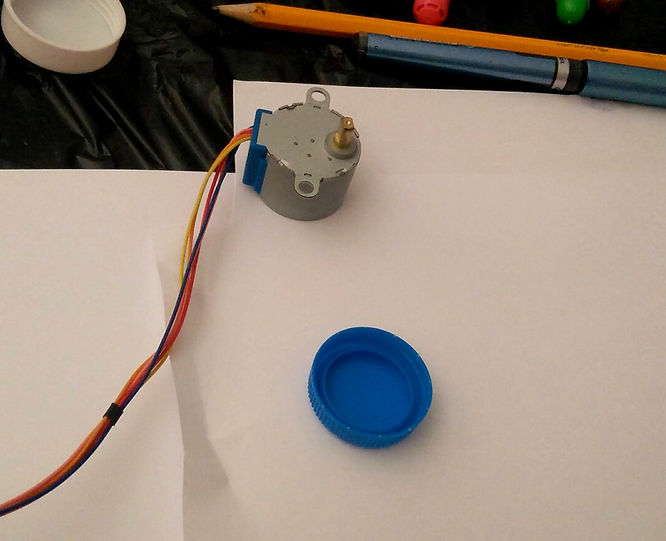
* מנוע צעד 28BYJ-48
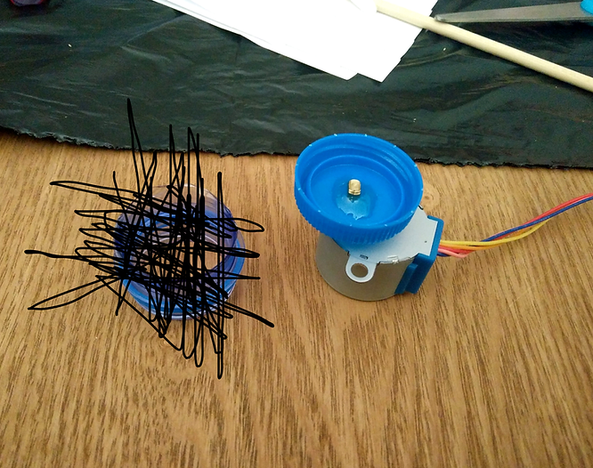
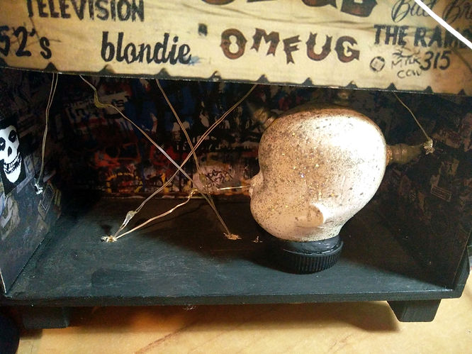
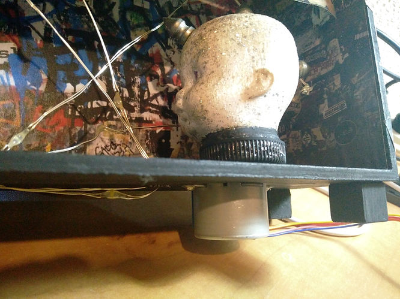
* קצת מטריד אותי שבחרתי בפקק של בקבוק. לא יודע אם זה כל כך נורא - אולי פה ספציפית זה דווקא מתאים. בכל מקרה, הראש מתפרק בקלות מה-shaft של המנוע ככה שאוכל לשפץ בהמשך.
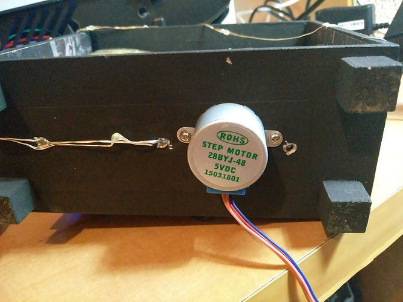
* נחמד, הוא ינוע אחרת לגמרי למרות שגם מצד לצד זה לא רע.
* איזה כיף המנוע הזה, שקט ועובד פיקס - קניתי מאי-ביי עכשיו עוד 10 כאלה. כולל דרייבר ULN2003 לכל אחד. סך הכל קרוב ל-30 דולר אוסטרלי.
* הערה: גודל השאפט 5mm.
* המוסיקה מהלפטופ, כמובן. עדיין לא מהקופסא.
רעיון נוסף: הקופסא תהיה בעצם אתר אינטרנט שסובב סביב פאנק, CBGB וכו'. מעין תחנת מידע אולי.
עדכון: 30/7/19
התקדמתי קצת עם הבהוב/עמעום של התאורה
בשירותים של ה-CBGB נמצא המחזיק סוללות והמפסק
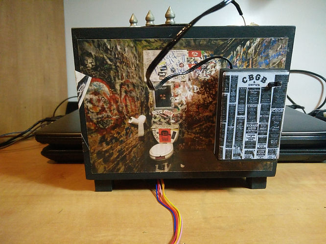
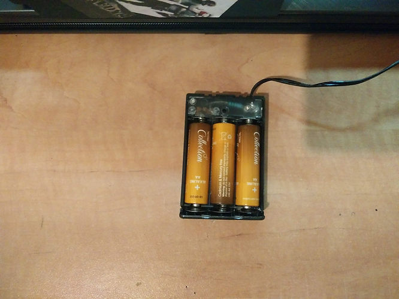
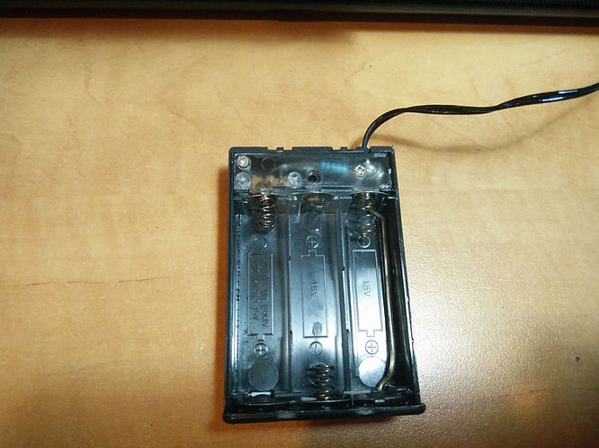
חיברתי חוטים לשתי הרגליים של המפסק ועכשיו המיקרוקונטרולר יכול לקחת שליטה במקום המפסק
המטרה שלי היא ליצור אפקט של עמעום אורות והבהובים, כמו בסרטי אימה - כאילו יש נתקים בחשמל וכולי.
עכשיו, זה מעניין, אנסה ליצור את האפקטים האלה בעזרת PWM - בעזרת קוד.
בשלב השני או במקביל, אני רוצה לנסות ליצור את האפקט הזה בצורה אמיתית. כלומר באמת לגרום לבעיות במערכת החשמל. ברגע שאני משחק עם החוטים שכרגע מחוברים בצורה רופפת למחזיק סוללות, אני מקבל אפקט נחמד. השאלה היא איך לגרום לאפקט כזה בצורה אוטומטית - לפי דרישה.
האורות בשילוב עם הראש:
אוקיי, יש התקדמות אבל נתקלתי בבעיה שצריך למצוא לה פיתרון - אם הכוונה שלי היא לסובב בו-זמנית מספר מנועים, לשלוט על הדלקת אורות וכולי (בקופסאות שונות).
שימו לב לתמונה הבאה:
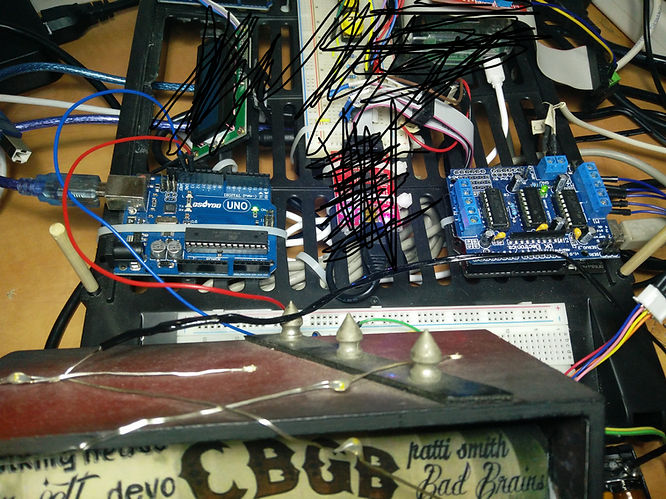
אני מחבר לארדואינו UNO השמאלי את התאורה, פין 13 - וזה אחרי שניתקתי ממנו את ה-cnc shield שמשמש אותי ב-Polargraph, למשל. ול-motor shield על הארדואינו הימני, חיברתי את המנוע צעד. צריך לחשוב איך לצמצם ולייעל את המערכת.
מתחיל להיות צפוף וזה סימן טוב ;)
כפי שציינתי למעלה, יש לי משלוח בדרך לארץ עם 10 מנועי צעד 28BYJ-48 כולל דרייבר לכל מנוע.
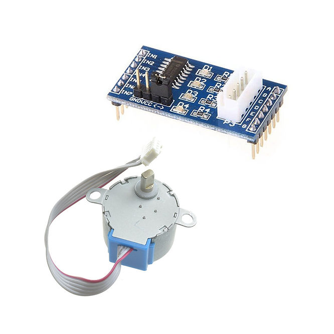
זה, כבר יותר אלגנטי
מצאתי בארגז ההפתעות שלי מודול דרייבר ULN2003 מתאים בדיוק ל-28BYJ-48
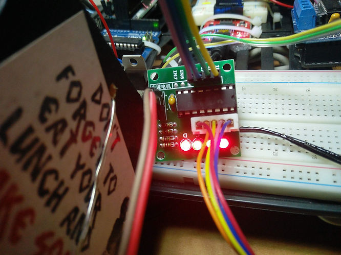
ועכשיו אין צורך יותר בארדואינו הימני (עם ה-motor shield).
הקוד נראה כרגע כך, ללא התאורה, רק המנוע צעד:
#include<Stepper.h>
constint stepsPerRevolution =2048;
Stepper stepper =Stepper(stepsPerRevolution, 8, 10, 9, 11); // IN1-IN4 of uln2003 board to pins 8-11
voidsetup() {
stepper.setSpeed(15);
Serial.begin(9600);
}
voidloop() {
Serial.println("clockwise");
stepper.step(stepsPerRevolution);
Serial.println("counterclockwise");
stepper.step(-stepsPerRevolution);
}
אז ארדואינו אחד צריך לשלוט גם על הטיימר של התאורה וגם על ההוראות למנוע צעד.
כרגע הטיימר של התאורה נעשה בתוכנה - delay של שנייה בין כיבוי להדלקה. אם אשים את הקוד הזה ב-loop יחד עם ההוראות למנוע - המנוע יסתובב מאוד מאוד לאט. זה לא עובד בצורה כזאת.
דבר נוסף, הקוד למעלה של Stepper.step, גם הוא בלוקינג - זאת אומרת שהראש יסתובב את כל 2048 הצעדים שנקבעו, עם כיוון השעון. לאחר מכן נגד כיוון השעון, ורק אז יבצע פקודות בהמשך - בתוך ה-loop.
עדכון 31/7/19
הפיתרון לעניין הזה הוא בשתי פונקציות: millis ו-micros - שתיהן מחזירות את הזמן שעבר מתחילת ריצת התוכנית. הראשונה, בדיוק של אלפיות שנייה והשנייה בדיוק של מיליוניות השנייה. מה שנשאר לעשות זה לקבוע interval לכל אחד מהרכיבים, למשל כל 1000 מילישניות לתאורה וערך אחר למנוע צעד - ובפונקציית loop דוגמים בכל סיבוב את הזמן הנוכחי ומשווים לזמן הקודם. אם הערך הגיע לאותו ערך של ה-interval - מדליקים את התאורה.
// constants won't change. Used here to set a pin number:
constint ledPin = LED_BUILTIN;// the number of the LED pin
// Variables will change:
int ledState = LOW; // ledState used to set the LED
// Generally, you should use "unsigned long" for variables that hold time
// The value will quickly become too large for an int to store
unsignedlong previousMillis =0; // will store last time LED was updated
// constants won't change:
constlong interval =1000; // interval at which to blink (milliseconds)
voidsetup() {
// set the digital pin as output:
pinMode(ledPin, OUTPUT);
}
voidloop() {
// here is where you'd put code that needs to be running all the time.
// check to see if it's time to blink the LED; that is, if the difference
// between the current time and last time you blinked the LED is bigger than
// the interval at which you want to blink the LED.
unsignedlong currentMillis =millis();
if (currentMillis - previousMillis >= interval) {
// save the last time you blinked the LED
previousMillis = currentMillis;
// if the LED is off turn it on and vice-versa:
if (ledState == LOW) {
ledState = HIGH;
} else {
ledState = LOW;
}
// set the LED with the ledState of the variable:
digitalWrite(ledPin, ledState);
}
}
וזה הקוד המאוחד של הראש והתאורה, עובדים בסנכרון:
#include<Stepper.h>
constint stepsPerRevolution =2048;
Stepper stepper =Stepper(stepsPerRevolution, 8, 10, 9, 11); // IN1-IN4 of uln2003 board to pins 8-11
constint lightingPin =13;
int lightingState = LOW;
unsignedlong previousMillis[]= {0, 0};
constlong interval[]= {1000, 1};
voidsetup() {
Serial.begin(9600);
stepper.setSpeed(15);
pinMode(lightingPin, OUTPUT);
}
voidloop() {
unsignedlong currentMillis =millis();
// Lighting
if (currentMillis -previousMillis[0] >=interval[0]) {
previousMillis[0] = currentMillis;
if (lightingState == LOW) {
lightingState = HIGH;
} else {
lightingState = LOW;
}
digitalWrite(lightingPin, lightingState);
}
// Head
if (currentMillis -previousMillis[1] >=interval[1]) {
previousMillis[1] = currentMillis;
stepper.step(1);
}
}
* כל אלפית שנייה הראש מבצע צעד אחד וכל 1000 אלפיות שנייה התאורה משנה את ה-state מ-on ל-off ולהיפך.
וזה נראה כך:
כמה דברים שאני רוצה לעשות בהמשך:
1. להחליף את המערכים ב-data structure אחר. הכוונה ל-previousMillis ו-interval - ששניהם מחזיקים מספר ערכים לכל אחד מהרכיבים הראשיים במערכת - המנוע והתאורה.
משום שבמהלך היום אני מפתח web ו-90% מהזמן כותב Javascript, באופן טבעי אני חושב JSON. אני מתאר לעצמי שיש ספריה לזה. זה נראה לי בזבזני. אשתמש ב-struct. אם יש אפשרויות נוספות, אשמח לדעת עליהן.
2. לפרק את הקובץ הראשי למספר קבצים. כל אחד מהרכיבים הראשיים בקובץ נפרד. בהמשך ליצור ספריות נוחות לשימוש, משום שסביר להניח שאצטרך לסובב מנוע צעד באותה צורה או להדליק תאורה - בפרויקטים נוספים. כרגע לא בעדיפות גבוהה.
3. לעבוד על כל אחד מהרכיבים בנפרד וליצור סיקוונסים מעניינים.
שיניתי את המערכים ל-struct:
#include<Stepper.h>
typedefstruct{
unsignedlong previousMillis;
long interval;
} timingData;
timingData lightingTimingData = {0, 1000};
timingData headTimingData = {0, 1};
constint stepsPerRevolution =2048;
Stepper stepper =Stepper(stepsPerRevolution, 8, 10, 9, 11); // IN1-IN4 of uln2003 board to pins 8-11
constint lightingPin =13;
int lightingState = LOW;
voidsetup() {
Serial.begin(9600);
stepper.setSpeed(15);
pinMode(lightingPin, OUTPUT);
}
voidloop() {
unsignedlong currentMillis =millis();
// Lighting
if (currentMillis -lightingTimingData.previousMillis>= lightingTimingData.interval) {
lightingTimingData.previousMillis= currentMillis;
if (lightingState == LOW) {
lightingState = HIGH;
} else {
lightingState = LOW;
}
digitalWrite(lightingPin, lightingState);
}
// Head
if (currentMillis -headTimingData.previousMillis>= headTimingData.interval) {
headTimingData.previousMillis= currentMillis;
stepper.step(1);
}
}
שיניתי את הקוד ובמקום timingData לכל רכיב, יש אחד גלובלי. הוספתי sequences לתאורה. הראש בינתיים עושה צעד אחד בכל סיבוב של loop.
#include<Stepper.h>
typedefstruct{
unsignedlong previousMillis;
long interval;
} timingData;
timingData globalTimingData = {0, 1};
constint stepsPerRevolution =2048;
Stepper stepper =Stepper(stepsPerRevolution, 8, 10, 9, 11); // IN1-IN4 of uln2003 board to pins 8-11
if (currentMillis -globalTimingData.previousMillis>= globalTimingData.interval) {
globalTimingData.previousMillis= currentMillis;
counter++;
if (counter==1000) {
counter =0;
}
}
runLighting();
runHead();
}
voidrunLighting() {
// Array length - number of items
int lightingSeqSize =sizeof(lightingSeq) /sizeof(lightingSeq[0]);
for(int i =0;i<lightingSeqSize;i++) {
if(counter ==lightingSeq[i]) {
if (lightingState == LOW) {
lightingState = HIGH;
} else {
lightingState = LOW;
}
}
}
digitalWrite(lightingPin, lightingState);
}
voidrunHead() {
stepper.step(1);
}
הוספתי counter שסופר מ-0 עד 1000 וחוזר חלילה. יש לזה כמה סיבות. למרות אי שימוש ב-delay, יש חלקים בקוד - בסיבוב של המנוע למשל - שגורמים ל-Blocking. מה שזה אומר ש-previousMillis לא תמיד מקבל את הערכים. ה-counter מבטיח לי שתמיד יהיה טווח של 0 עד 1000. זה לא הכי מדוייק מבחינת זמנים, אבל זה עובד במיצג מהסוג הזה. כמובן שבהמשך אלמד לשכלל את העניין.
הוספתי sequence להבהוב של התאורה. אני לא סגור לגבי הדיוק, כרגע. בהמשך אוציא את המידע לגרף וכולי. בינתיים, זה נראה טוב. לעמעום אגיע גם בהמשך.
כבר במצב הזה, זה לא רע בכלל. בכל מקרה, אמשיך עם שאר המשימות, גם אם זה יהיה לצורך לימוד ולפרויקטים אחרים.